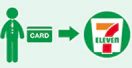

일본 국내 여행 시에 알아 두면 편리한 정보를 모았습니다. ATM 및 Wi-Fi
스폿 등의
기본 정보, 지상 교통 안내 및 여행 중 체험 플랜 등을 소개합니다.
세븐 은행 ATM이라면 일본 내에서 편리하게 부담 없이 출금 가능합니다. 세븐 일레븐에서 일본 엔화를 인출할 수 있습니다.
해외에서 발행된 현금 카드 및 신용 카드로 세븐 일레븐에 있는 ATM에서 일본 엔화를 인출할 수 있습니다.세븐 은행의 ATM은 일본 전역 세븐 일레븐 매장 외에도 주요 공항 및 역, 대형 상업 시설 등 곳곳에 설치되어 있습니다.
세븐일레븐 내 ATM이면 아침에도 밤에도 일본 엔화로 인출할 수 있습니다.
ATM 화면을 영어, 한국어, 중국어, 포르투갈어 등 12개 언어 중에서 선택하여 표시할 수 있습니다. 또한 비치된 인터폰으로도 일본어 또는 영어로 문의가 가능합니다.
· 마크가 표시되어 있는 카드라도 사용할 수 없는 경우가 있습니다.
· 세븐 은행의 수수료 이외에 카드 발행 기관의 수수료 지불이 필요한 경우가 있습니다.
카드를 지참하여 세븐 일레븐 매장으로 갑니다
매장 내에 있는 ATM을 사용합니다
일본 엔화를 인출합니다
ATM의 화면과 명세표는 영어, 한국어, 중국어, 포르투갈어 등 12개 언어 중에서 선택하여 표시 및 발행할 수 있습니다.
카드를 꽃습니다.
※마그네틱이 있는 쪽이 아래를 향하도록 삽입
이용하실 언어를 선택합니다.
‘인출’ 버튼을 선택합니다.
인출하실 계좌를 선택합니다.
비밀번호를 입력하고 ‘Enter’를 누릅니다.
출글함 금액(엔)을 선택합니다.
현금을 수령합니다.
※카드와 명세표는 꼭 챙기시기 바랍니다.
세븐 은행 ATM은 세븐 일레븐 매장 외에도 주요 공항 및 역, 대형 상업 시설 등 곳곳에 설치되어 있습니다.
일본 통화는 '엔'이며 ￥ 마크로 표시됩니다.
·이천 엔짜리 지폐는 별로 유통되지 않으므로 볼 기회가 적습니다. 이천 엔짜리 지폐는 통상적인 쇼핑 시 문제없이 결제에 사용할 수 있지만 일부 ATM이나 자동 판매기에는 사용할 수 없습니다.
일본을 방문하는 관광객에게 인기 있는 앱입니다. 이 앱을 스마트폰 등의 장치에 설치하면 Wi-Fi 스폿을 찾아 간단히 연결할 수 있습니다. 자세한 내용은 Japan Wi-Fi auto-connect 사이트를 참조하시기 바랍니다.